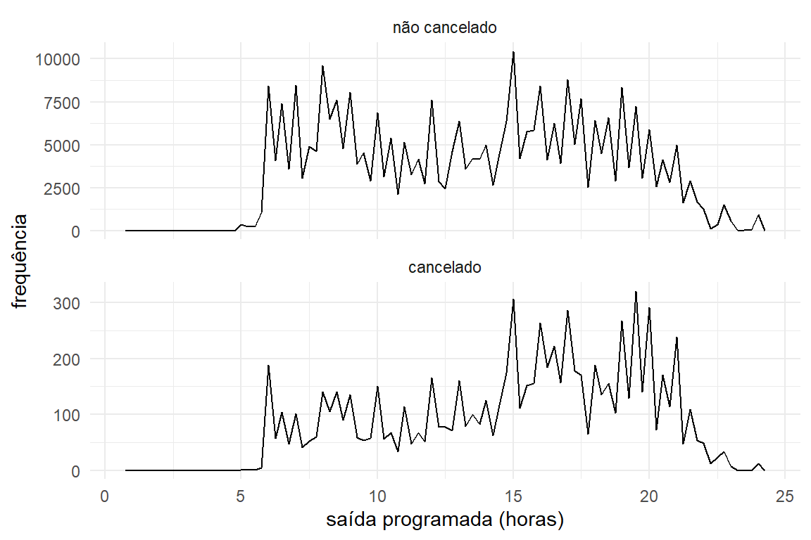
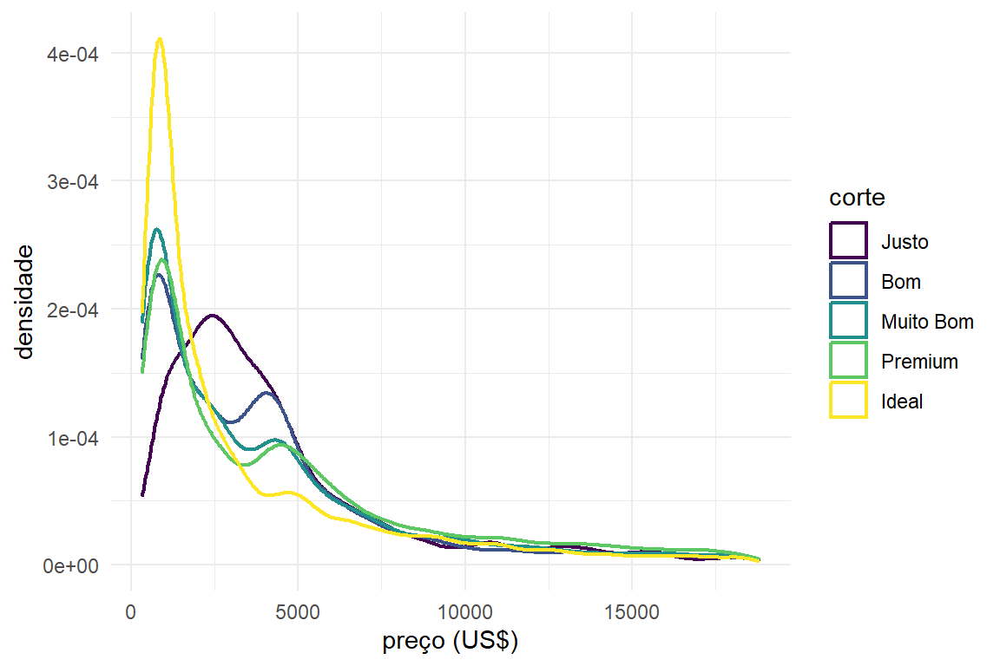
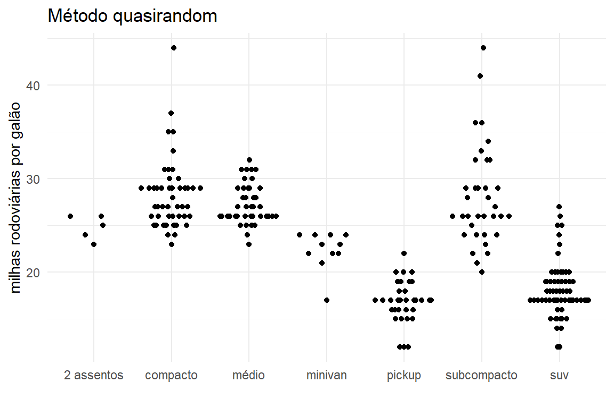
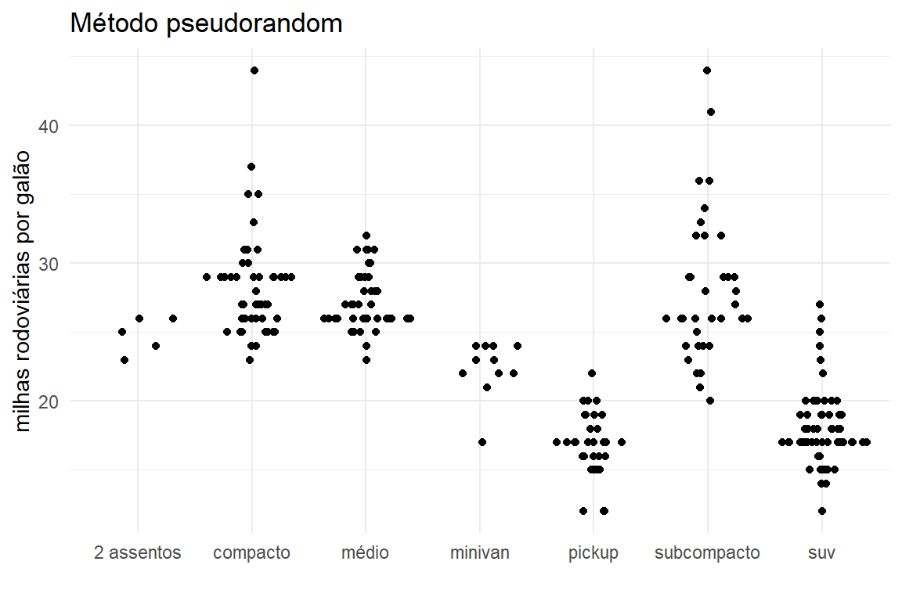
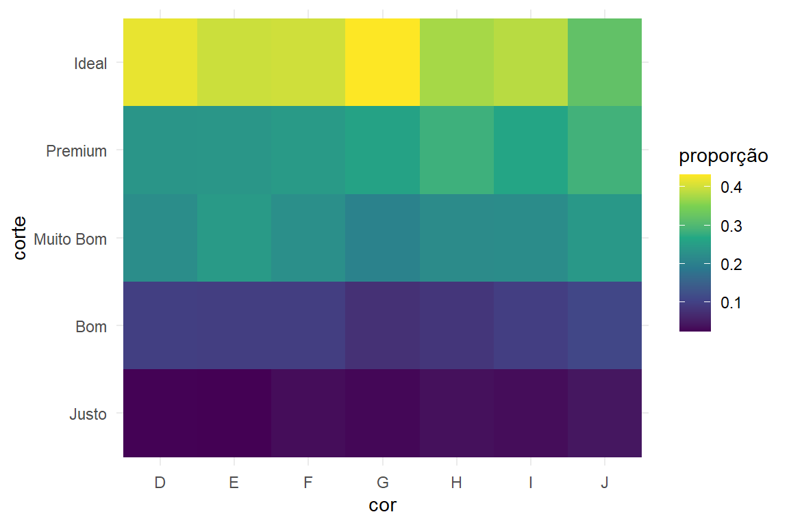
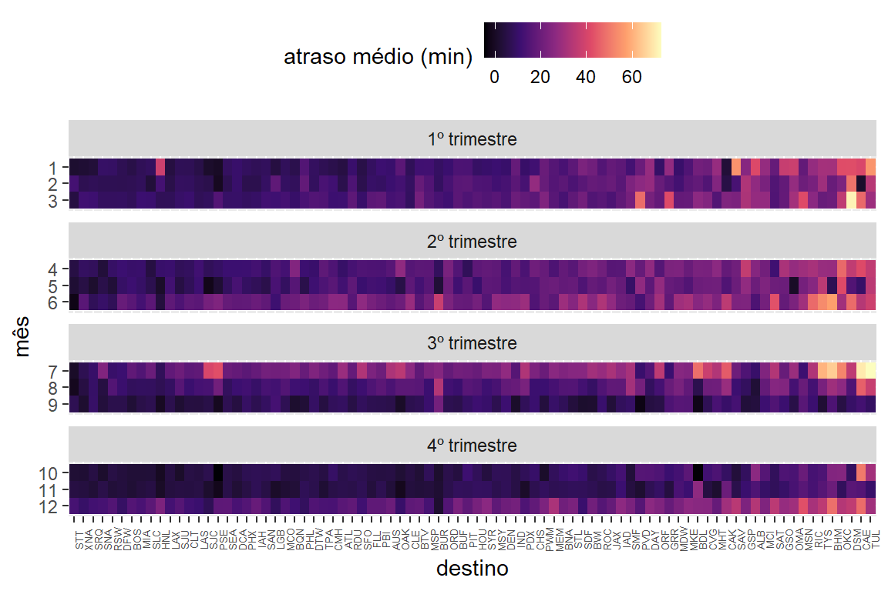

2 Análise exploratória de dados
2.1 Pré-requisitos
2.2 Variação
- Explore a distribuição das variáveis
x,y, andzemdiamantes. O que você aprendeu? Pense em um diamante e como você pode decidir qual dimensão é o comprimento, largura e profundidade.
Resolução: Inicialmente, vamos gerar os histogramas de cada uma das dimensões para melhor compreender cada uma.
diamante |>
dplyr::select(c(x, y, z)) |>
tidyr::pivot_longer(
cols = tidyr::everything(),
names_to = "variavel",
values_to = "valor"
) |>
ggplot(
mapping = aes(x = valor)
) +
geom_histogram(binwidth = 0.5) +
facet_wrap(vars(variavel),
ncol = 3,
scales = "free",
strip.position = "bottom") +
theme_minimal() +
theme(
strip.placement = "outside",
axis.title.x = element_blank()
) +
labs(y = "frequência")Visualizando os histogramas de cada das dimensões, é possível perceber que as dimensões são positivamente distribuídas (\(x >= 0\), \(y >= 0\) e \(z >= 0\)), mas que há outliers, isto é, valores atípicos nas caudas inferior e superior das distribuições (hipótese esta sugerida devido aos limites amplos no eixo x dos gráficos).
Para visualizar melhor os valores típicos de cada dimensão, geraremos novamente os histogramas. Mas, desta vez, com um zoom em uma região de interesse.
diamante |>
dplyr::select(c(x, y, z)) |>
tidyr::pivot_longer(
cols = tidyr::everything(),
names_to = "variavel",
values_to = "valor"
) |>
ggplot(
mapping = aes(x = valor)
) +
geom_histogram(binwidth = 0.5) +
facet_wrap(vars(variavel),
ncol = 3,
scales = "free",
strip.position = "bottom") +
theme_minimal() +
theme(
strip.placement = "outside",
axis.title.x = element_blank()
) +
labs(y = "frequência") +
coord_cartesian(xlim = c(2.5, 9))
Agora, com esta última visualização, podemos perceber que, em geral, o comprimento (x) e a largura (y) dos diamantes dessa base de dados são mais similares, enquanto que a profundidade (z) parece ser menor.
- Explore a distribuição de
preço. Você percebe algo incomum ou surpreendente? (Dica: pense cuidadosamente sobre o binwidth e tenha certeza que você tentou uma ampla gama de valores.)
Resolução: Inicialmente, vamos gerar o histograma da variável preco para tentar compreender sua distribuição, mas sem alterar o parâmetro binwidth.
ggplot(
data = diamante,
mapping = aes(x = preco)
) +
geom_histogram() +
theme_minimal() +
labs(x = "preço (US$)", y = "frequência")
#> `stat_bin()` using `bins = 30`. Pick better value with `binwidth`.O histograma gerado sugere que a distribuição de preços é assimétrica à direita. Isso significa que a maioria dos diamantes possui preços concentrados em faixas mais baixas, criando um pico pronunciado na parte inicial da distribuição. No entanto, há uma cauda longa estendendo-se para valores mais altos, indicando a presença de alguns diamantes com preços extremamente elevados.
Agora, vamos explorar diferentes valores de binwidth para verificar se conseguimos identificar algum padrão ou detalhe que possa estar passando despercebido.
Entretanto, uma questão crucial que surge é: como determinar os valores ideais para binwidth?
A escolha do valor de binwidth é uma parte crucial ao criar histogramas, pois afeta como a variável de interesse será visualizada e interpretada. Mas, não existe uma abordagem única para determinar o valor ideal para binwidth.
Se você tiver interessado no assunto, pode pesquisar mais sobre Regra de Sturges, Regra de Scott e Regra de Freedman-Diaconis a fim de obter uma visão mais formal da estatística por trás do assunto.
Aqui, será apresentada uma abordagem mais empírica para o tema, por meio da experimentação e visualização.
Para tanto, vamos explorar valores pequenos e grandes de binwidth para tentar compreender, na prática, como o binwidth afeta a interpretação do histograma.
binwidths <- c(
seq(from = 0.05, to = 2.5, by = 0.5),
seq(from = 5, to = 100, by = 10),
seq(from = 500, to = 1500, by = 250),
15000
)
purrr::map(binwidths, \(bw){
ggplot(
data = diamante,
mapping = aes(x = preco)
) +
geom_histogram(binwidth = bw) +
theme_minimal() +
labs(
title = glue::glue("binwidth = {bw}"),
x = "preço (US$)",
y = "frequência"
)
})
#> [[1]]
#>
#> [[2]]
#>
#> [[3]]
#>
#> [[4]]
#>
#> [[5]]
#>
#> [[6]]
#>
#> [[7]]
#>
#> [[8]]
#>
#> [[9]]
#>
#> [[10]]
#>
#> [[11]]
#>
#> [[12]]
#>
#> [[13]]
#>
#> [[14]]
#>
#> [[15]]
#>
#> [[16]]
#>
#> [[17]]
#>
#> [[18]]
#>
#> [[19]]
#>
#> [[20]]
#>
#> [[21]]

Quando o valor de binwidth é excessivamente pequeno, o histograma passa a refletir a frequência de cada valor individual, sem proporcionar uma visualização agrupada por classes, o que dificulta uma interpretação mais generalizada. Por outro lado, quando o binwidth é demasiadamente grande, os dados são agrupados em poucas classes, o que pode ocultar detalhes importantes ou, em casos extremos, levar a interpretações equivocadas (observe o caso em que binwidth = 15.000). Por tanto, um binwidth inadequado pode ocultar padrões importantes ou criar padrões artificiais.
Mas, quando variamos os valores de binwidth entre 5 e 75, percebemos algo curioso. Em torno de US$ 1.500, há uma lacuna no histograma, sugerindo que, portanto, não há diamantes com preços em torno de US$ 1.500,00.
- Quantos diamantes equivalem a 0,99 quilates? Quantos equivalem a 1 quilate? O que você acha que é a causa da diferença?
Resolução: Inicialmente, vamos gerar o histograma, dando um zoom próximo a esses valores.
ggplot(
data = diamante,
mapping = aes(x = quilate)
) +
geom_histogram(binwidth = 0.01) +
theme_minimal() +
labs(
x = "quilate (ct)",
y = "frequência"
) +
coord_cartesian(xlim = c(0.97, 1.02))Na base de dados, havia mais diamantes com exatamente 1 quilate do que com 0,99 quilates. Essa diferença pode ser explicada por fatores comerciais, já que o peso da pedra impacta diretamente em seu valor e, para além disso, o preço tende a aumentar significativamente quando o peso atinge um peso crítico, como 1 quilate, devido ao apelo psicológico e ao valor de mercado associado a esse peso simbólico.
- Compare e contraste coord_cartesian() vs. xlim() ou ylim() quando fizer uma ampliação em um histograma. O que acontece se você deixa o binwidth desativado? O que acontece se você tentar ampliar de forma que apenas meia barra seja exibida?
Resolução: Quando as funções xlim() ou ylim() são utilizadas, os dados que não pertencem ao intervalo especificado são removidos. Em outras palavras, isso significa que as funções xlim() e ylim() realizam primeiro uma filtragem dos dados, removendo aqueles fora do intervalo especificado, para só então gerar o gráfico propriamente dito. Isso, no entanto, pode afetar a estimativa de frequência das classes do histograma, já que os demais dados são removidos. Diferentemente dessas duas funções, a coord_cartesian() permite ampliar uma área no gráfico, mas sem remover os dados não contidos no intervalo de interesse, funcionando como um zoom na visualização.
Podemos comparar este comportamento das funções nos gráficos abaixo.
ggplot(
data = diamante,
mapping = aes(x = quilate)
) +
geom_histogram() +
theme_minimal() +
labs(
title = "Usando a função coord_cartesian()",
x = "quilate (ct)",
y = "frequência"
) +
coord_cartesian(xlim = c(1.2, 1.40))
#> `stat_bin()` using `bins = 30`. Pick better value with `binwidth`.
ggplot(
data = diamante,
mapping = aes(x = quilate)
) +
geom_histogram() +
theme_minimal() +
labs(
title = "Usando a função xlim()",
x = "quilate (ct)",
y = "frequência"
) +
xlim(c(1.2, 1.40))
#> `stat_bin()` using `bins = 30`. Pick better value with `binwidth`.
#> Warning: Removed 50549 rows containing non-finite outside the scale range
#> (`stat_bin()`).
#> Warning: Removed 2 rows containing missing values or values outside the scale range
#> (`geom_bar()`).Além disso, observe que, no histograma em que foi utilizada a função coord_cartesian(), as barras correspondentes aos limites do intervalo definido permanecem visíveis no gráfico, enquanto que, no histograma em que foi utilizada a função xlim(), não.
2.3 Lidando com valores atípicos
- O que acontece com valores ausentes em um histograma? O que acontece com valores ausentes em um gráfico de barras? Por que existe uma diferença em como valores ausentes são tratados em histogramas e gráficos de barras?
Resolução: Os valores ausentes (NA) são tratados de maneira diferente em histogramas e gráficos de barras devido à natureza dos dados que cada tipo de gráfico representa.
No histograma, valores ausentes não são incluídos no cálculo das frequências das classes e também não são apresentados graficamente, pois não representam nenhuma classe.
Observe a mensagem ao gerar o histograma no exemplo abaixo.
# transformando, em `NA`, os valores "estranhos" de `y`
diamante2 <- diamante |>
dplyr::mutate(
y = dplyr::if_else(dplyr::between(y, 3, 20), y, NA)
)
# gerando o histograma para a variável `y`
diamante2 |>
ggplot(aes(x = y)) +
geom_histogram(binwidth = 0.1) +
theme_minimal()
#> Warning: Removed 9 rows containing non-finite outside the scale range
#> (`stat_bin()`).Por outro lado, no gráfico de barras, os valores ausentes são considerados, por padrão, como uma das categorias e são apresentados graficamente como a frequência de ocorrência de NAs.
No exemplo abaixo, NAa são introduzidos na variável corte para demonstrar como valores faltantes são apresentados em um gráfico de barras.
# transformando, em `NA`, as categorias do corte nas observações em que `y` não está entre 3 e 20
diamante2 <- diamante |>
dplyr::mutate(
corte = dplyr::if_else(dplyr::between(y, 3, 20), corte, NA)
)
# gerando o gráfico de barra para a variável `corte`
diamante2 |>
ggplot(aes(x = corte)) +
geom_bar() +
theme_minimal()
# gerando o gráfico de barra para a variável `corte` com um zoom para ver melhor a barra referente aos valores faltantes
diamante2 |>
ggplot(aes(x = corte)) +
geom_bar() +
coord_cartesian(ylim = c(0, 10)) +
theme_minimal()Resolução: Quando é usado na.rm = TRUE nas funções mean() e sum(), estamos indicando para estas funções que os valores ausentes (NA) devem ser removidos antes de serem realizados os cálculos.
Quando na.rm = FALSE e há valores faltantes na sequência, as funções retornam NA como resultado. Já quando na.rm = TRUE e há valores faltantes na sequência, as funções, primeiramente, eliminam os NAs e, depois, realizam os cálculos.
Na prática, podemos comparar os resultados de quando na.rm é definido como FALSE (default) e TRUE, por exemplo, ao estimar a média do conjunto \(\{1, 2, 3, 4, NA\}\).
- Recrie o gráfico de frequência de
saida_programadacolorido de acordo com o voo ter sido cancelado ou não. Também use o facetamento para a variávelcancelado. Experimente diferentes valores do argumentoscalesna função de facetamento para mitigar o efeito de mais voos não cancelados do que voos cancelados.
Resolução: Para conseguir ver a distribuição de cada categoria, tendo em vista que uma das categorias (a categoria referente aos voos não cancelados) tem muito mais voos do que outra (a categoria referente aos voos não cancelados), podemos gerar subgráficos para cada nível da variável cancelado, deixando que o eixo y, o qual expressa a frequência, seja ajustado individualmente para cada um.
voos2 <- voos |>
dplyr::mutate(
cancelado = is.na(horario_saida),
hora_programada = saida_programada %/% 100,
min_programado = saida_programada %% 100,
saida_programada_em_hora = hora_programada + (min_programado / 60)
)
voos2 |>
dplyr::mutate(
cancelado = dplyr::if_else(cancelado == TRUE, "cancelado", "não cancelado"),
cancelado = forcats::as_factor(cancelado)
) |>
ggplot(aes(x = saida_programada_em_hora, color = cancelado)) +
geom_freqpoly(binwidth = 0.25) +
facet_wrap(vars(cancelado), ncol = 1, scales = "free_y") +
labs(x = "saída programada (horas)", y = "frequência") +
theme(legend.position = "none") +
theme_minimal()
2.4 Covariação
2.4.1 Uma variável categórica e uma numérica
- Use o que você aprendeu para melhorar a visualização dos horários de partida de voos cancelados e não cancelados.
Resolução:
dados::voos |>
dplyr::mutate(
cancelado = is.na(horario_saida),
cancelado = dplyr::if_else(cancelado == TRUE, "cancelado", "não cancelado"),
hora_programada = saida_programada %/% 100,
min_programado = saida_programada %% 100,
saida_programada = hora_programada + (min_programado / 60)
) |>
ggplot(
aes(x = forcats::fct_reorder(cancelado, saida_programada), y = saida_programada)
) +
geom_boxplot() +
labs(x = "", y = "saída programada") +
theme_minimal()- Com base na EDA, qual variável do banco de dados diamante parece ser mais importante para predizer o preço de um diamante? Como essa variável está correlacionada com corte? Por que a combinação dessas duas relações resulta em diamantes de pior qualidade terem preços mais elevados?
Resolução: Para visualizar as relações entre a variável preco e as demais variáveis númericas, podemos usar um pair plot que, além de gerar gráficos de dispersão, também estima a correlação entre as variáveis.
library(GGally)
ggpairs(diamante, columns = c(1:2, 6:10)) +
theme_minimal()Embora as dimensões do diamanete pareçam ser importantes para predizer o preço, o quilate é a variável mais importante para predizer o preço. Observe que, à medida que o quilate aumenta, o preço aumenta de forma exponencial. Além disso, a análise de correlação confirma essa tendência, evidenciando uma relação forte entre o quilate e o preço do diamante.
Como há muitos pontos, podemos gerar um boxplot agrupando os valores de quilate, assim como vimos anteriormente no capítulo.
ggplot(
diamante,
aes(x = quilate, y = preco)
) +
geom_boxplot(aes(group = cut_width(quilate, 0.1))) +
labs(x = "quilate (ct)",
y = "preço (US$)") +
theme_minimal()Agora, vamos investigar como o valor do quilate se correlaciona com corte.
ggplot(data = diamante,
mapping = aes(
x = corte,
y = quilate
)) +
geom_boxplot() +
labs(x = "", y = "quilate (ct)") +
theme_minimal()A variável corte representa a qualidade da lapidação do diamante, em que justo é pior que bom, que, por sua vez, é pior que muito bom e assim por diante.
Observamos que diamantes com quilates mais altos tendem a ter qualidade de corte mais baixa (i.e., justo), enquanto que diamantes com qualidade de corte superior (i.e., ideal) tendem a terem menores valores de quilate.
Tendo em vista essas duas relações, uma possível explicação para que diamantes com pior qualidade de corte terem preços mais elevados pode ser o fato da associação entre preço e quilate ser mais forte. Isso provavelmente porque, como diamantes maiores são mais raros e a demanda por eles é maior, seus preços aumentam mais do que a potencial “desvalorização” por ter uma lapidação de qualidade inferior.
- Ao invés de trocar as variáveis x e y, adicione
coord_flip()como uma nova camada para transformar o boxplot de vertical para horizontal. Como isso se compara à troca de variáveis?
Resolução: Anteriormente, criamos boxplots trocando os eixos x e y. Agora, vamos usar coord_flip().
ggplot(milhas,
aes(x = forcats::fct_reorder(classe, rodovia, median), y = rodovia)) +
geom_boxplot() +
theme_minimal() +
labs(x = "", y = "milhas rodoviárias por galão") +
coord_flip()A função coord_flip(), portanto, permite obter uma representação rotacionada sem ter que alterar manualmente as variáveis nos eixos.
- Um problema com os boxplots é que eles foram desenvolvidos em uma era de conjuntos de dados muito menores e tendem a exibir um número proibitivamente grande de “valores discrepantes”. Uma abordagem para remediar esse problema é o gráfico de valores de letras. Instale o pacote
lvplot, e tente usargeom_lv()para exibir a distribuição de preço vs. corte. O que você entende? Como você interpreta os gráficos?
Resolução: Um letter value plot é uma alternativa ao boxplot tradicional, especialmente útil para grandes conjuntos de dados.
library(lvplot)
ggplot(diamante, aes(x = corte, y = preco)) +
geom_lv() +
labs(x = "", y = "preço (US$)") +
theme_minimal()É possível observar que diamantes de corte justo apresentam uma maior dispersão de preços. Além disso, diamantes com cortes de maior qualidade (i.e., ideal) geralmente possuem preços medianos menores.
- Crie uma visualização dos preços dos diamantes vs. uma variável categórica do banco de dados diamante usando o
geom_violin(), depois umgeom_histogram()facetado, e depois umgeom_freqpoly()colorido, e então umgeom_density()colorido. Compare e contraste os quatro gráficos. Quais são os prós e contras de cada método de visualização da distribuição de uma variável numérica baseada nos níveis de uma variável categórica?
Resolução: Vamos visualizar a distribuição dos preços dos diamantes em relação à qualidade do corte por diferentes tipos de visualização.
Gráfico de violino
O gráfico de violino é uma combinação dos gráficos de densidade e boxplot. É uma representação interessante para visualizar a forma das distribuições e a variabilidade dos dados, mas pode tonar difícil a interpretação quando há muitas observações.
ggplot(diamante, aes(x = corte, y = preco)) +
geom_violin() +
labs(x = "", y = "preço (US$)") +
theme_minimal() +
coord_flip() Histograma
O histograma é uma representação da distribuição dos dados, possibilitando a comparação de frequências absolutas e identificaão de assimetrias. No entanto, é uma representação dependente do tamanho das classes (i.e., bins).
ggplot(diamante, aes(x = preco)) +
geom_histogram(bins = 100) +
facet_wrap(vars(corte), scales = "free_y", ncol = 1) +
labs(x = "preço (US$)",
y = "frequência") +
theme_minimal() Gráfico de frequência
O gráfico de frequência é uma alternativa ao histograma que traça linhas ao invés de barras. É uma representação boa para comparar diferentes categorias. No entanto, pode dificultar a interpretação quando há muitas categorias.
ggplot(diamante, aes(x = preco, y = after_stat(density))) +
geom_freqpoly(aes(color = corte), binwidth = 500) +
labs(x = "preço (US$)",
y = "frequência") +
theme_minimal() Gráfico de densidade
O gráfico de frequência é uma representação excelente para comparar distribuições e evidenciar padrões gerais, uma vez que suaviza variações nos dados. No entanto, pode subestimar ou superestimar densidades se a suavização for inadequada.
ggplot(diamante, aes(x = preco)) +
geom_density(aes(color = corte)) +
labs(x = "preço (US$)",
y = "densidade") +
theme_minimal() 
- Se você tem um pequeno conjunto de dados, às vezes é útil usar
geom_jitter()para evitar sobreposição dos pontos e visualizar mais facilmente a relação entre as variáveis contínuas e categóricas. O pacoteggbeeswarmdisponibiliza vários métodos similares aogeom_jitter(). Liste-os e descreva brevemente o que cada um deles faz.
Resolução: O pacote ggbeeswarm oferece duas alternativas ao geom_jitter() do ggplot2, permitindo visualizar melhor a dispersão dos pontos ao evitar sobreposição.
-
geom_quasirandom(): distribui os pontos aleatoriamente ao longo do eixo categórico, permitindo uma melhor visualização de pontos sobrepostos. Ao empregar a função, podem ser definidos vários métodos diferentes para determinar como os pontos serão distribuídos.
library(ggbeeswarm)
# default
ggplot(milhas, aes(x = classe, y = rodovia)) +
geom_quasirandom() +
labs(x = "",
y = "milhas rodoviárias por galão",
title = "Método quasirandom") +
theme_minimal()
# pseudorandom
ggplot(milhas, aes(x = classe, y = rodovia)) +
geom_quasirandom(method = "pseudorandom") +
labs(x = "",
y = "milhas rodoviárias por galão",
title = "Método pseudorandom") +
theme_minimal()
# maxout
ggplot(milhas, aes(x = classe, y = rodovia)) +
geom_quasirandom(method = "maxout") +
labs(x = "",
y = "milhas rodoviárias por galão",
title = "Método maxout") +
theme_minimal()
# minout
ggplot(milhas, aes(x = classe, y = rodovia)) +
geom_quasirandom(method = "minout") +
labs(x = "",
y = "milhas rodoviárias por galão",
title = "Método minout") +
theme_minimal()
# tukey
ggplot(milhas, aes(x = classe, y = rodovia)) +
geom_quasirandom(method = "tukey") +
labs(x = "",
y = "milhas rodoviárias por galão",
title = "Método tukey") +
theme_minimal()
# tukeyDense
ggplot(milhas, aes(x = classe, y = rodovia)) +
geom_quasirandom(method = "tukeyDense") +
labs(x = "",
y = "milhas rodoviárias por galão",
title = "Método tukeyDense") +
theme_minimal()
# smiley
ggplot(milhas, aes(x = classe, y = rodovia)) +
geom_quasirandom(method = "smiley") +
labs(x = "",
y = "milhas rodoviárias por galão",
title = "Método smiley") +
theme_minimal()
# frowney
ggplot(milhas, aes(x = classe, y = rodovia)) +
geom_quasirandom(method = "frowney") +
labs(x = "",
y = "milhas rodoviárias por galão",
title = "Método frowney") +
theme_minimal()

-
geom_beeswarm(): organiza os pontos como um “enxame de abelhas” (beeswarm), agrupando-os mais próximos de modo a minimizar a sobreposição.
ggplot(milhas, aes(x = classe, y = rodovia)) +
geom_beeswarm() +
labs(x = "", y = "milhas rodoviárias por galão") +
theme_minimal()2.4.2 Duas variáveis categóricas
- Como você poderia redimensionar o conjunto de dados de contagem acima para mostrar mais claramente a distribuição do corte dentro da cor ou da cor dentro do corte?
Resolução: Para redimensionar o conjunto de dados de contagem no conjunto de dados de diamantes e visualizar melhor a distribuição do corte dentro da cor ou da cor dentro do corte, podemos normalizar as frequências calculando proporções em vez de frequências absolutas.
Para mostrar a distribuição do corte dentro da cor, estimaremos a proporção de cada corte para cada cor.
diamante |>
dplyr::count(cor, corte) |>
dplyr::group_by(cor) |>
dplyr::mutate(prop = n / sum(n)) |>
ggplot(aes(x = cor, y = corte, fill = prop)) +
geom_tile() +
scale_fill_viridis_c() +
labs(fill = "proporção") +
theme_minimal()
Para mostrar a distribuição da cor dentro do corte, estimaremos a proporção de cada cor para cada corte
diamante |>
dplyr::count(corte, cor) |>
dplyr::group_by(corte) |>
dplyr::mutate(prop = n / sum(n)) |>
ggplot(aes(x = corte, y = cor, fill = prop)) +
geom_tile() +
scale_fill_viridis_c() +
labs(fill = "proporção") +
theme_minimal()- Que diferentes insights de dados você obtém com um gráfico de barras segmentado se a cor for mapeada para a estética x e o corte for mapeado para a estética de preenchimento? Calcule as contagens que se enquadram em cada um dos segmentos.
Resolução:
diamante2 <- diamante |>
dplyr::count(cor, corte)
diamante2 |>
ggplot(aes(x = cor, y = n, fill = corte)) +
geom_col() +
labs(y = "frequência") +
theme_minimal()- Use
geom_tile()junto comdplyrpara explorar como os atrasos médios nas partidas de voos variam de acordo com o destino e o mês do ano. O que torna o gráfico difícil de ler? Como você poderia melhorá-lo?
Resolução:
voos |>
dplyr::group_by(mes, destino) |>
dplyr::summarise(
atraso_medio = mean(atraso_saida, na.rm = TRUE),
.groups = "drop"
) |>
ggplot(
aes(x = factor(mes), y = destino, fill = atraso_medio)
) +
geom_tile() +
scale_fill_viridis_c() +
labs(
x = "mês",
y = "destino",
fill = "atraso \nmédio (min)"
) +
theme_minimal()Nesta visualização, como há muitos destinos, os nomes dos destinos ficam sobrepostos e a representação não fica fácil de interpretar. Além disso, para alguns destinos, há menos voos em alguns meses, o que pode tornar o mapa de calor enganoso.
Para facilitar a interpretação, poderíamos concentrar a nossa atenção nos destinos com voos regulares, isto é, que têm cobertura de 12 meses. Neste caso, valores ausentes correspondem a aeroportos que não têm voos regulares por serem, provavelmente, a aeroportos de pequeno porte.
Além disso, podemos ordenar os destinos pelo maior atraso médio para tornar as tendências mais claras no mapa.
Como ainda há muitos destinos, podemos trocar os eixos x e y e rotacionar também os rótulos referentes aos destinos.
voos2 |>
ggplot(
aes(x = factor(mes), y = destino, fill = atraso_medio)
) +
geom_tile() +
scale_fill_viridis_c(option = "magma") +
labs(
x = "mês",
y = "destino",
fill = "atraso médio (min)"
) +
theme(
legend.position = "top",
axis.text.x = element_text(size = 6, angle = 90)
) +
coord_flip()2.4.3 Duas variáveis numéricas
- Em vez de resumir a distribuição condicional com um boxplot, você poderia usar um polígono de frequência. O que você precisa considerar ao usar
cut_width()vs.cut_number()? Como isso afeta a visualização da distribuição 2D de quilate e preco?
Resolução: Tanto a função cut_width() quanto a cut_number() permitem discretizar uma variável númerica em categórica.
A função cut_width() permite gerar grupos de mesma largura.
menores_diamantes <- diamante |>
dplyr::filter(quilate < 3)
ggplot(
menores_diamantes,
aes(x = preco, color = cut_width(quilate, width = 0.25))
) +
geom_freqpoly(binwidth = 500) +
labs(
x = "preço (US$)",
y = "frequência",
color = "quilate (ct)"
) +
theme_minimal()
Já a função cut_number() gera \(n\) grupos com números (aproximadamente) iguais de observações.
ggplot(
menores_diamantes,
aes(x = preco, color = cut_number(quilate, n = 11))
) +
geom_freqpoly(binwidth = 500) +
labs(x = "preço (US$)", y = "frequência", color = "quilate (ct)") +
theme_minimal()
- Visualize a distribuição do
quilate, particionado porpreco.
Resolução:
menores_diamantes <- diamante |>
dplyr::filter(quilate < 3)
ggplot(menores_diamantes,
aes(x = cut_width(preco, 1500, boundary = 0), y = quilate)) +
geom_boxplot() +
labs(x = "preço (US$)", y = "quilate (ct)") +
coord_flip() +
theme_minimal()
ggplot(menores_diamantes,
aes(x = cut_number(preco, 10), y = quilate)) +
geom_boxplot() +
labs(x = "preço (US$)", y = "quilate (ct)") +
coord_flip() +
theme_minimal() - Como a distribuição de preços dos diamantes muito grandes se compara à dos diamantes pequenos? É como você espera ou te surpreende?
Resolução: Para diamantes muito grandes, os preços são maiores e, além disso, mais variáveis. Essa maior variabilidade implica que alguns diamantes grandes são extremamente caros, enquanto outros não são tão caros quanto o esperado devido, provavelmente, a influência de outros fatores no preço do diamante (como, por exemplo, a qualidade do corte). Já os diamantes mais pequenos, por outro lado, agrupam-se mais em torno de preços mais baixos, o que sugere uma maior estabilidade nos preços de diamantes pequenos.
- Combine duas das técnicas que você aprendeu para visualizar a distribuição combinada de
corte,quilateepreço.
Resolução:
ggplot(diamante,
aes(x = corte,
y = preco,
color = cut_number(quilate, 10))) +
geom_boxplot() +
labs(x = "qualidade do corte",
y = "preço (US$)",
color = "quilate (ct)") +
theme_minimal() +
scale_color_viridis_d()- Gráficos bidimensionais revelam valores discrepantes que não são visíveis em gráficos unidimensionais. Por exemplo, alguns pontos no gráfico a seguir têm uma combinação incomum de valores
xey, o que torna os pontos discrepantes, embora seus valoresxeypareçam normais quando examinados separadamente. Por que um gráfico de dispersão é uma exibição melhor do que um gráfico agrupado neste caso?
diamante |>
filter(x >= 4) |>
ggplot(aes(x = x, y = y)) +
geom_point() +
coord_cartesian(xlim = c(4, 11), ylim = c(4, 11))Resolução: Ao gerar o gráfico de dispersão, torna-se mais óbvios os valores atípicos das relações entre as variáveis. Por exemplo, alguns diamantes podem ter comprimentos e larguras considerados normais individualmente, mas cujas combinações não parecem representar realmente um diamante (como um diamante extremamente longo, mas muito estreito).
- Em vez de criar classes de largura igual com
cut_width(), poderíamos criar classes que contenham um número aproximadamente igual de pontos com cut_number(). Quais são as vantagens e desvantagens desta abordagem?
ggplot(menores_diamantes,
aes(x = quilate, y = preco)) +
geom_boxplot(aes(group = cut_number(quilate, 20)))Resolução: Como é definido um número específico de grupos com um número aproximadamente igual de observações, os grupos (intervalos de valores) podem não ser uniformes, o que pode dificultar a interpretação direta dos valores. Portanto, esta estratégia é boa para comparar distribuições equilibradas, mas os intervalos podem ser irregulares e difíceis de interpretar.